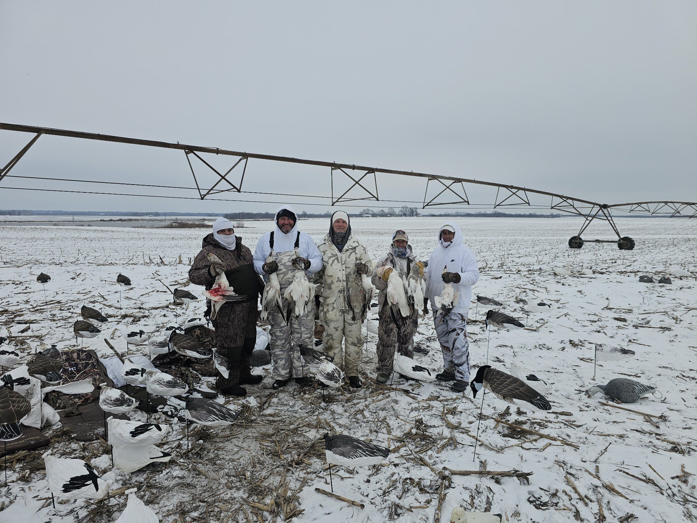

Outdoor fellowships that create connection.
Fully funded outdoor fellowship opportunities designed to connect veterans, active-duty service members, and Gold Star families with meaningful time outdoors.
What is an outdoor fellowship?
Outdoor fellowships bring participants together for guided hunting experiences, conservation work, and shared time outdoors — building relationships through shared adventure. Every fellowship is fully funded: there is no cost to participants.

Guided hunts
Fully funded, professionally guided hunting experiences on private partner land in the Kansas City region.
Conservation work
Hands-on habitat projects — giving back to the prairie through stewardship alongside fellow participants.
Fellowship events
Gatherings that keep the community connected before, during, and after every outing.
Who we serve
- Veterans
- Active-duty service members
- Gold Star families
Safety comes first
Every NPVF outing is run with safety as the top priority — experienced staff, clear protocols, and a culture where anyone can call a stop at any time.
Been on a hunt? Come back.
Alumni are the backbone of NPVF. Past participants are invited back — to hunt again, to mentor newcomers, and to help lead the next fellowship.